Randomisierte Algorithmen
Contents
Randomisierte Algorithmen
- Definition
- Randomisierte Algorithmen sind Algorithmen, die bei Entscheidungen über ihr weiteres Vorgehen oder bei der Wahl ihrer Parameter Zufallszahlen benutzen.
Anschaulich gesprochen, wersucht man bei randomisierten Algorithmen, einen Teil der Lösung zu raten. Auf den ersten Blick würde man vermuten, dass dabei nicht viel Sinnvolles herauskommen kann. Diese Kapitel wird jedoch zeigen, dass man durch geschicktes Raten tatsächlich zu sehr eleganten Algorithmen gelangen kann.
Grundsätzlich unterscheidet man zwei Arten von randomisierten Algorithmen:
- Las Vegas - Algorithmen
- Das Ergebnis des Algorithmus ist immer korrekt, und die Berechnung erfolgt mit hoher Wahrscheinlichkeit effizient.
- Monte Carlo - Algorithmen
- Die Berechnung ist immer effizient, und das Ergebnis ist mit hoher Wahrscheinlichkeit korrekt.
Las Vegas-Algorithmen verwendet man, wenn der Algorithmus im ungünstigen Fall eine schlechte Laufzeit hat, und der ungünstige Fall kann durch die Randomisierung sehr unwahrscheinlich gemacht werden. Wir haben in der Vorlesung schon mehrere Las Vegas-Algorithmen kennen gelernt:
- Quick Sort mit zufälliger Wahl des Pivot-Elements: Die Randomisierung verhindert, dass das Array immer wieder in Subarrays von sehr unterschiedlicher Größe aufgeteilt wird.
- Treap mit zufälligen Prioritäten: Die Randomisierung verhindert, dass der Baum schlecht balanciert ist.
- Universelles Hashing: Die zufällige Wahl der Hashfunktion verhindert, dass ein Angreifer eine Schlüsselmenge mit sehr vielen Kollisionen konstruieren kann.
- Erzeugung einer perfekten Hashfunktion: Durch die Randomisierung entsteht mit nach wenigen Versuchen ein zyklenfreier Graph, der zur Definition der Hashfunktion geeignet ist.
Monte Carlo-Algorithmen verwendet man dagegen, wenn kein effizienter deterministischer Algorithmus für ein Problem bekannt ist. Man gibt sich dann damit zufrieden, dass der randomisierte Algorithmus die korrekte Lösung nur mit hoher Wahrscheinlichkeit findet, wenn dies dafür sehr effizient geschieht. Bei manchen Problemen ist auch dies unerreichbar - man muss dann bereits zufrieden sein, wenn der Algorithmus mit hoher Wahrscheinlichkeit eine sehr gute Näherungslösung findet. Beliebte Anwendungsgebiete für Monte Carlo-Algorithmen sind beispielsweise
- Randomisierte Primzahl-Tests: Moderne Verschlüsselungsverfahren benötigen zahlreiche Primzahlen, aber exakte Primzahltests sind teuer. Der Miller-Rabin-Test findet effizient Zahlen, die mit sehr hoher Wahrscheinlichkeit tatsächlich Primzahlen sind.
- Randomisiertes Testen: Wie jeder Test kann auch eine randomisierter Test nicht die Abwesenheit von Programmierfehlern garantieren, aber man kann durch die Randomisierung viel mehr Testfälle generieren und erhöht so die Erfolgswarscheinlichkeit. Wir haben als Beispiel dafür den Algorithmus von Freivald behandelt.
- Lösung schwieriger Optimierungsprobleme: Wir zeigen unten, dass ein randomisierter Algorithmus effizient eine Lösung für das 2-SAT-Problem aus dem vorherigen Kapitel findet (für k-SAT mit
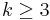
liefert der Algorithmus immer noch mit einer gewissen Wahrscheinlichkeit das richtige Ergebnis, ist aber nicht mehr effizient). Einen effizienten Approximationsalgorithmus für des Problem des Handelsreisenden behandlen wir im Kapitel NP-Vollständigkeit. Weitere wichtige Beispiele für diesen Bereich sind simulated annealing und das Markov-Chain-Monte-Carlo-Verfahren. - Robuste Statistik: Eine Grundaufgabe der Statistik ist das Anpassen (Fitten) von Modellen an gemessene Werte. Wenn die Messungen jedoch "Ausreißer" (einige völlig falsche Werte) enthalten, geht die Anpassung schief. Wir beschreiben unten den RANSAC-Algorithmus, der die Ausreißer identifizieren und beim Modellfitten ignorieren kann.
Obwohl randomisierte Algorithmen oft einfach und elegant sind, ist ihre theoretische Analyse (also das Führen von Korrektheits- und Komplexitätsbeweisen) häufig sehr schwierig. Man muss fortgeschrittene Methoden der Wahrscheinlichkeitsrechnung und Statistik beherrschen, um die Wahrscheinlichkeit für das Versagen des Algorithmus zu berechnen und um zu zeigen, wie man den Algorithmus benutzt, damit diese Wahrscheinlichkeit unter einer akzeptablen Schranke bleibt. Die Algorithmen, die wir für diese Vorlesung ausgewählt haben, zeichnen sich dadurch aus, dass die Beweise hier einfach zu erbringen sind.
Anwendung: Lösen des K-SAT-Problems
Der Algorithmus von Schöning löst das k-SAT-Problem durch Raten: Wenn ein Ausdruck in k-CNF den Wert False hat, gibt es mindestens eine Klausel, die den Wert False hat. Alle Literale in dieser Klausel haben ebenfalls den Wert False, denn jede Klausel ist eine ODER-Verknüpfung, die nur dann False werden kann. Um den Ausdruck zu erfüllen, muss jede Klausel den Wert True annehmen, also müssen wir den Wert von mindestens einem Literal umdrehen. Wenn der Ausruck tatsächlich erfüllbar ist, gibt es immer ein geeignetes Literal, wir wissen nur nicht, welches. Deshalb drehen wir ein unter den k Literalen der betreffenden Klausel zufällig gewähltes. Liegen wir mit unserer Wahl richtig, sind wir der Lösung näher gekommen - im besten Fall sind jetzt alle Klauseln erfüllt. Wählen wir jedoch die falsche Variable, ist die aktuelle Klausel zwar jetzt True, aber dafür werden andere Klauseln zu False, die bisher True waren, und wir entfernen uns somit von der Lösung.
geg.: logischer Ausdruck in K-CNF (n Variablen, m Klauseln, k Variablen pro Klausel)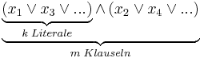
Der Algorithmus von Schöning lautet in Pseudocode:
for i in range (trials): #Anzahl der Versuche
Bestimme eine Zufallsbelegung der Variablen 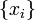
for j in range (steps):
if erfüllt alle Klauseln:
return
wähle zufällig eine Klausel, die nicht erfüllt ist und negiere zufällig eine der Variablen in dieser Klausel
# (die Klausel ist jetzt erfüllt)
return None # keine Lösung gefunden
Findet der Algorithmus eine Lösung, wissen wir, dass der Ausdruck erfüllbar ist. Andernfalls könnte der Ausdruck unerfüllbar sein, oder wir haben nur Pech gehabt. Je mehr erfolglose Versuche wir machen, desto höher ist die Wahrscheinlichkeit, dass das erste zutrifft.
Es ist sinnvoll, steps = k*n zu wählen. Dann gilt der
- Satz
- Wenn ein Ausdruck in k-CNF mit erfüllbar ist, muss man im Mittel trials
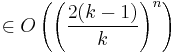
Versuche machen, um eine Lösung zu finden.
Für gilt stets
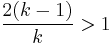
, man benötigt also eine in n exponentielle Anzahl von Versuchen. Bei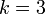
gilt z.B. trials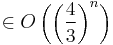
. Dies ist zwar im Mittel effizienter also die erschöpfende Suche, die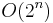
Schritte benötigt, aber immer noch sehr langsam.Der Fall  ist jedoch ein Sonderfall: Hier kann man leicht beweisen, dass eine Lösung im Mittel bereits nach
ist jedoch ein Sonderfall: Hier kann man leicht beweisen, dass eine Lösung im Mittel bereits nach
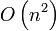
Schritten gefunden wird. Wenn man schon weiss, dass der Ausdruck erfüllbar ist (was mit Implikationgraphen leicht geprüft werden kann), lässt man den randomisierten Algorithmus einfach so lange laufen, bis er eine Lösung findet. Man setzt also step = infinity und trials = 1 und verlässt sich darauf, dass das return mit einer gültigen Lösung früher oder später ausgeführt wird. Dass man darauf im Mittel nur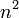
Schritte warten muss, zeigen wir jetzt mit Hilfe eines random walk.Laufzeitanalyse der randomisierten 2-SAT-Algorithmus mittels Random Walk
Um die Random Walk Analyse zu verstehen, betrachten wir folgendes Spiel:
geg.: eine Stuhlreihe mit N Stühlen. Wir nummerieren die Stühle so, dass links der Stuhl 0 und rechts der Stuhl N steht.
* Eine Person setzt sich zufällig auf einen der Stühle.
* Eine zweite Person wirft eine Münze.
Wenn die Münze auf Zahl fällt, rückt die erste Person einen Stuhl nach links, andernfalls nach rechts.
<--- Zahl Kopf --->
* Frage: Wie oft muss man die Münze im Durchschnitt werfen, bis Person 1 zum ersten Mal auf Stuhl N sitzt?
Da die erste Person sich anfangs zufällig hinsetzt, haben wir eine Chance von 1/N, dass sie gleich auf dem richtigen Stuhl landet und wir 0 Schritte benötigen. Mit der gleichen Wahrscheinlichkeit von 1/N setzt sie sich anfangs auf Stuhl Nummer (N-1), und wir haben eine fifty-fifty-Chance, mit nur einem Wurf durchzukommen. Wir können aber auch Pech haben und landen auf Stuhl Nummer (N-2). Das ist das Gleiche, als wenn Person 1 von Anfang an auf diesem Stuhl gesessen hätte, nur dass wir jetzt bereits einen Wurf verbraucht haben. Man sieht, dass man die Zahl der Restwürfe immer in dieser Art ausdrücken kann: Sitzt Person 1 auf Stuhl i, kann sie entweder nach rechts rücken und benötigt dann noch soviele Würfe, wie man typischerweise für Stuhl i+1 benötigt, plus den Wurf von i => i+1. Oder sie kann nach links rücken und benötigt dann die typische Wurfzahl für Stuhl i-1 plus den Wurf i => i-1. Beide Möglichkeiten haben die Wahrscheinlichkeit 1/2. Mathematisch kann man dies elegant als Rekursionsformel schreiben, die die erwartete Wurfzahl für Stuhl i als Funktion der entsprechenden Wurfzahlen für die Stühle i-1 und i+1 ausdrückt:
- Wenn wir uns auf Stuhl N befinden, werfen wir gar nicht:
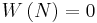
- Von Stuhl 0 gehen wir immer zu Stuhl 1:
- Allgemeiner Fall:
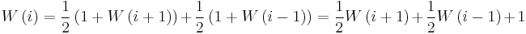
Diese Rekursion wird durch die explizite Formel
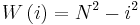
gelöst, wie man durch Einsetzen leicht nachprüft:
Insbesondere braucht man im ungünstigen Fall (Start auf Stuhl 0) im Durchschnitt
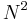
Würfe, im typischen Fall (Start in der Mitte, also bei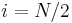
) im Durchschnitt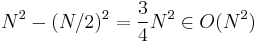
Würfe. Die Beziehung zum randomisiertem 2-SAT-Algorithmus ist jetzt leicht zu erkennen. Sitzt die Person auf Stuhl i, interpretieren wir das als:
"Stuhl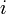
": Variablen haben den richtigen Wert,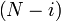
sind falsch gesetzt
Wählt der Algorithmus eine Klausel, die nicht erfüllt ist, gibt es zwei Möglichkeiten:
- Beide Literale in der Klausel haben den falschen Wert: Die Lösung wird auf jeden Fall besser, egal welche der beiden wir umdrehen. Wir gehen also von Zustand i zu Zustand i+1.
- Nur eins der Literale hat den falschen Wert: Beim Umdrehen haben wir eine fifty-fifty-Chance, das richtige Literal zu wählen und in den Zustand i+1 zu gelangen. Mit der selben Wahrscheinlichkeit wählen wir das falsche Literal und landen im Zustand i-1.
Falls 2 ist der ungünstigere und entspricht unserem Spiel, dessen Analyse wir deshalb einfach auf das 2-SAT-Problem übertragen können: Ziel des Algorithmus ist es, in den Zustand N zu gelangen, und deshalb gilt genau wie beim Spiel der
- Satz
- Der randomisierte 2-SAT-Algorithmus findet im Durchschnitt nach
 Versuchen eine Lösung, wenn das Problem erfüllbar ist.
Versuchen eine Lösung, wenn das Problem erfüllbar ist.
Damit ist der randomisierte Algorithmus für dieses Problem effizient, was Sie in Übung 12 experimentell nachprüfen sollen.
RANSAC-Algorithmus (Random Sample Consensus)
Aufgabe: gegeben: Datenpunkte
- gesucht: Modell, das die Datenpunkte erklärt

Messpunkte:
übliche Lösung: Methode der kleinsten Quadrate
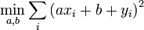
Schulmathematik: 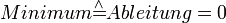
Lineares Gleichungssystem
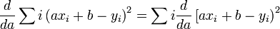
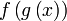
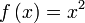
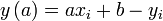
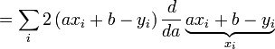
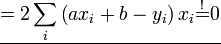
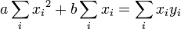
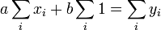
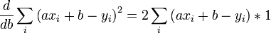
- Problem:
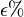
der Datenpunkte sind Outlier
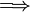
Einfaches Anpassen des Modells an die Datenpunkte funktioniert nicht
- Seien mindestens k Datenpunkte notwendig, um das Programm anpassen zu können
RANSAC-Algorithmus
for l in range (trials):
wähle zufällig k Punkte aus
passe das Modell an die k Punkte an
zähle, wieviele Punkte in der Nähe des Modells liegen (d.h. 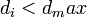
muss geschickt gewählt werden)
#Bsp. Geradenfinden:-wähle a,b aus zwei Punkten
-berechne: 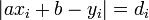
-zähle Punkt i als Inlier, falls 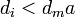
return: Modell mit höchster Zahl der Inlier
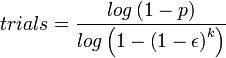
mit k=Anzahl der Datenpunkte und p=Erfolgswahrscheinlichkeit,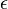
=Outlier-Anteil
Erfolgswahrscheinlichkeit: p=99%
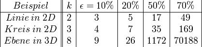
Zufallszahlen
- - kann man nicht mit deterministischen Computern erzeugen
- - aber man kann Pseudo-Zufallszahlen erzeugen, die viele Eigenschaften von echten Zufallszahlen haben
- * sehr ähnlich zum Hash
"linear Conguential Random number generator"
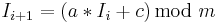
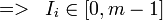
- -sorgfältige Wahl von a, c, m notwendig
- Bsp. m = 232
- a = 1664525, c = 1013904223
- "quick and dirty generator"
- Bsp. m = 232
Nachteile
- nicht zufällig genug für viele Anwendungen
- Bsp. wähle Punkt in R3
- gibt Zahl u, v, w so, dass
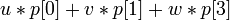
- stark geclustert ist.
- Periodenlänge ist zu kurz:
- spätestens nach m Schritten wiederholt sich die Folge
- allgemein: falls der interne Zustand des Zufallsgenerators k bits hat, ist Periodenlänge:
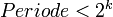
- lowbits sind weniger zufällig als die highbits
Mersenne Twister
bester zur Zeit bekannter Zufallszahlengenerator (ZZG)
- innere Zustand:
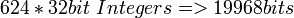
- Periodenlänge:
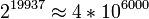
- Punkte aus aufeinanderfolgende Zufallszahlen in
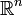
sind gleich verteilt bis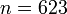
- alle Bits sind unabhängig voneinander zufällig ("Twister")
- schnell
class MersenneTwister:
def __init__(self, seed):
self.N = 624 # Größe des inneren Zustands festlegen
self.i = 0 # zählt mit in welchem Zustand wir uns gerade aufhalten
self.state = [0]*self.N # Speicher für den inneren Zustand reservieren
self.state[0] = seed # initiale Zufallszahl vom Benutzer
# den Rest des inneren Zustands mit einfachem Zufallszahlengenerator initialisieren
for i in xrange(1, self.N):
self.state[i] = (1812433253 * (self.state[i-1] ^ (self.state[i-1] >> 30)) + i) % 4294967296
def __call__(self):
"""gibt die nächste Zufallszahl im Bereich [0, 232-1] aus"""
N, M = self.N, 397
# Zustand aktualisieren (neue Zufallszahl ausrechnen)
i = self.i
r = ((self.state[i] & 0x80000000) | (self.state[(i+1)%N] & 0x7FFFFFFF)) >> 1
if self.state[(i+1)%N] & 1:
r ^= 0x9908B0DF
self.state[i] = self.state[(i+M)%N] ^ r
# aktuelle Zufallszahl auslesen und ihre Zufälligkeit durch verwürfeln der Bits verbessern
y = self.state[i]
y ^= (y >> 11)
y ^= ((y << 7) & 0x9D2C5680)
y ^= ((y << 15) & 0xEFC60000)
y ^= (y >> 18)
# Zustand weitersetzen und endgültige Zufallszahl ausgeben
self.i = (self.i + 1) % N
return y
geg.: Zufallszahl
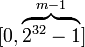
ges.: Zufallszahl
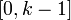
naive Lösung:
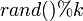
ist schlecht.Bsp.
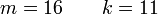
| rand() | 0 | 1 | 2 | 3 | 4 | 5 | 6 | 7 | 8 | 9 | 10 | 11 | 12 | 13 | 14 | 15 |
|---|---|---|---|---|---|---|---|---|---|---|---|---|---|---|---|---|
| rand()%k | 0 | 1 | 2 | 3 | 4 | 5 | 6 | 7 | 8 | 9 | 10 | 0 | 1 | 2 | 3 | 4 |
=> 0,...,4 kommt doppelt so häufig wie 5,...,10 "nicht zufällig"
Lösung: Zurückweisen des Rests der Zahlen (rejektion sampling)
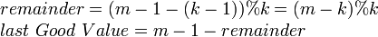
r = rand()
while r > last.GoodValue:
r = rand()
return r%k